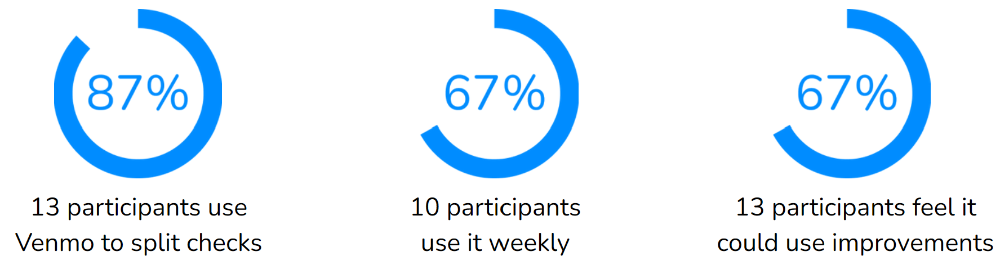
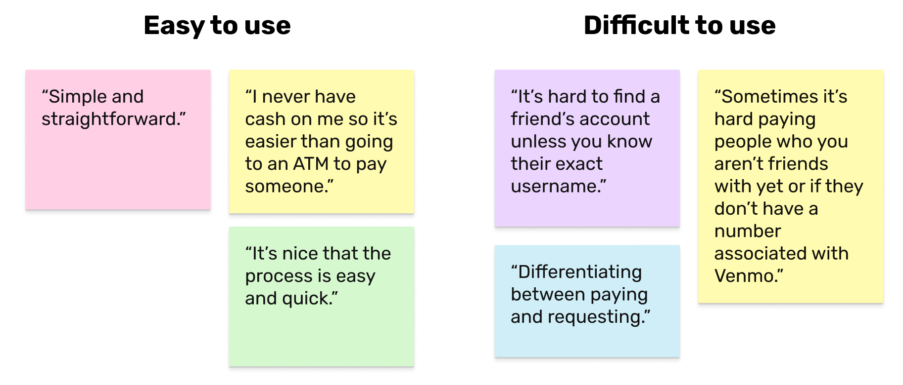
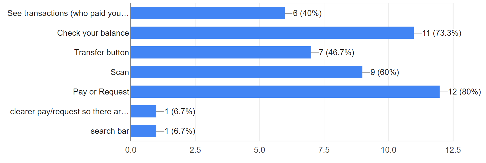
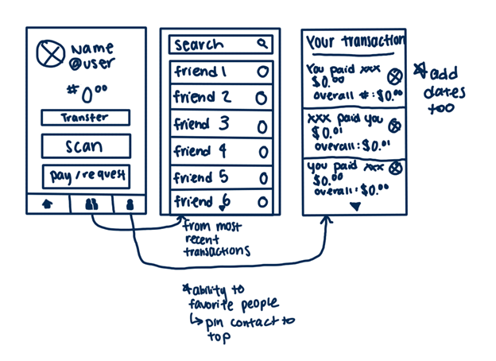
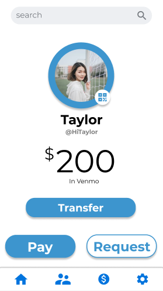
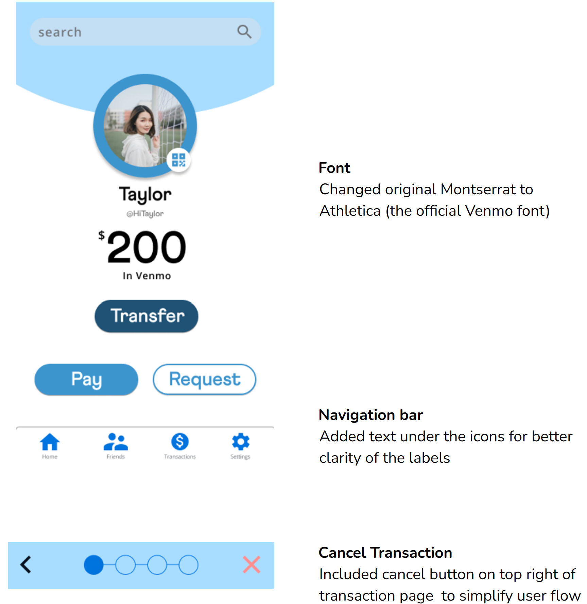
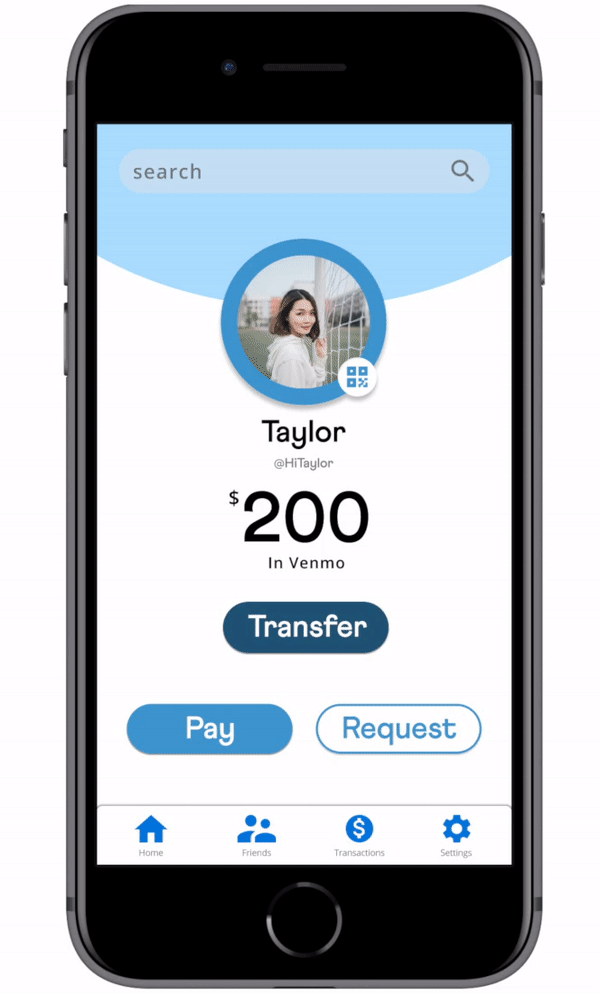
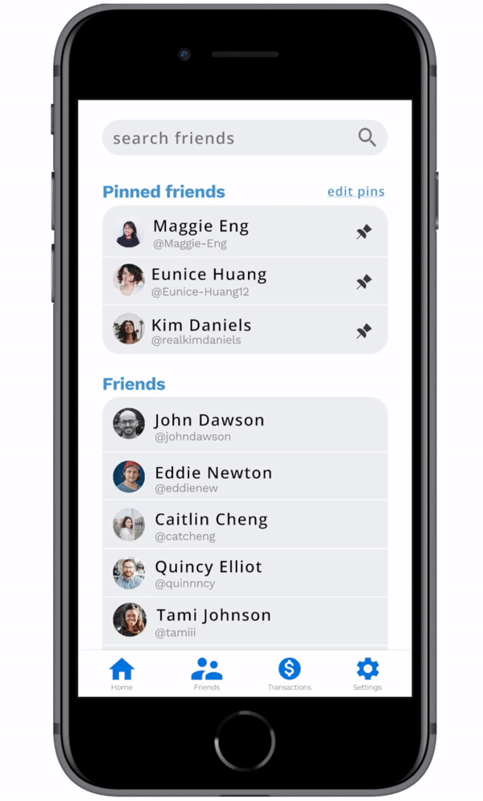

Venmo made splitting bills and paying others an ease and convenient. However, the process of sending others money can be confusing and difficult for users to understand. In a two-week sprint, my team and I redesigned the app to streamline the process of transaction.
Award: Most Customer-Centric Design
The Challenge
With many factors to consider, sending money through Venmo can be a long winded journey. How might we redesign Venmo to simplify user experience?
User Research
Quantitative Research
I wanted to better understand to find what aspects users struggled with on Venmo. To start the research, I surveyed 15 students and found the following:

Qualitative Research
With the same 15 participants, I asked them to elaborate and describe their experiences with Venmo.

Suggested Features
I wanted to know what original Venmo functions were already working for users, so I asked participants about features they enjoyed and want to keep.

After thoroughly evaluating the interviews we collected, we pinpointed four common problems participants brought up, and ideated pages which addressed the concerns.
The Solution
Friends page
pin friends and contacts to top of the page
Transaction page
allow users to go back during transaction process, separate friend and non-friend options
Set landing page
set as Profile page
Landing page
include pay/request and transfer options
Ideation
Low Fidelity Sketches
My team and I drafted our initial designs for the changes that could be made to specific pages. I included the feature to add 'favorites', which would bring contacts to the top of the page. This would allow easy and convenient access for users who frequently Venmo particular friends and individuals. We discussed particular features we liked and wanted to keep from each person's design.

Mid Fidelity
Here, we explored and mapped our ideas into Figma. I created the layout and placement for the friends page.

Critique
We met with our Project Mentor, Aileen, who provided feedback on visual design to adhere to Venmo's brand guideline and user flow to better the user experience.

High Fidelity
Using the feedback given, we made cleaned up the elements and made final adjustments to our design.

Profile as the Landing Page
Venmo's landing page displays past transactions. To create ease of access, the landing page is your profile with various QR scanning options.
Friends or Not
To further ensure users are sending money to the correct person, we redesigned the transaction process that provides different lists of people depending if the user already follows them in Venmo.

Pinned Friends
Finding friends can be difficult in Venmo. We added the option of pinning friends to the top of the screen for convenient access to those users to find individuals.
Reflection
Curate a user-centric product
During the ideation stage, I struggled with creating a new design for the user. Because Venmo is well-established, I was initially intimated to redesign the app. However, I discovered focusing solely on the problems participants noted they faced made it easier to make informed and calculated redesigns. Listening to the users' feedback helped guide me and our project to create a better design that streamlined the process of transferring money.
Team communication
To begin the project with team members who were unfamiliar with each other, we communicated to determine our individual strengths and weaknesses. This helped us identify who would be best suited to lead different parts of the project. Additionally, we made sure to discuss our progress throughout the ideation phase to ensure everyone was aligned with the project's direction and goals.